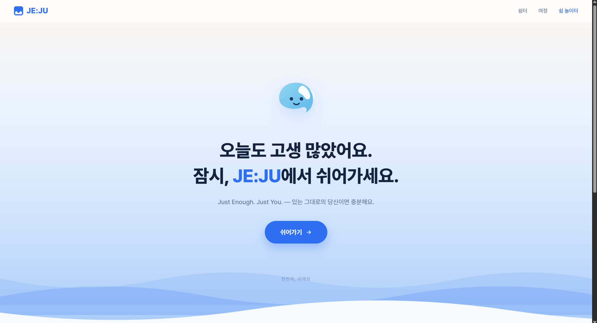
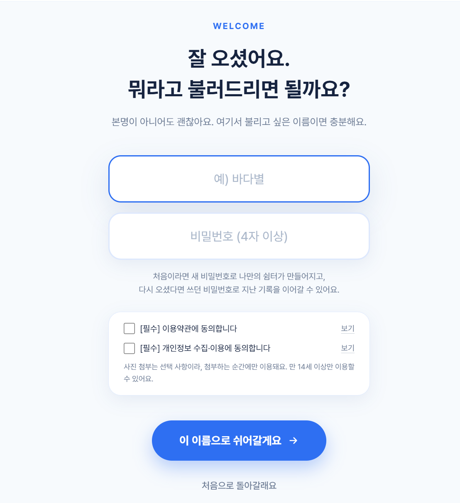
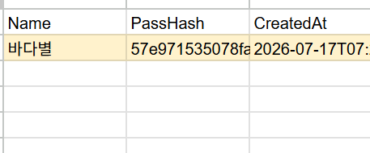
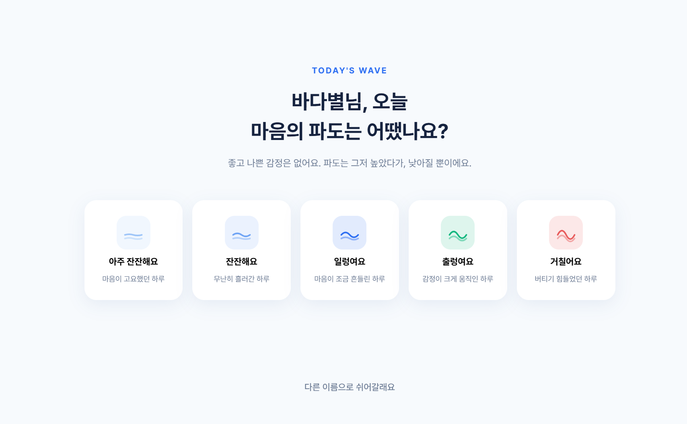
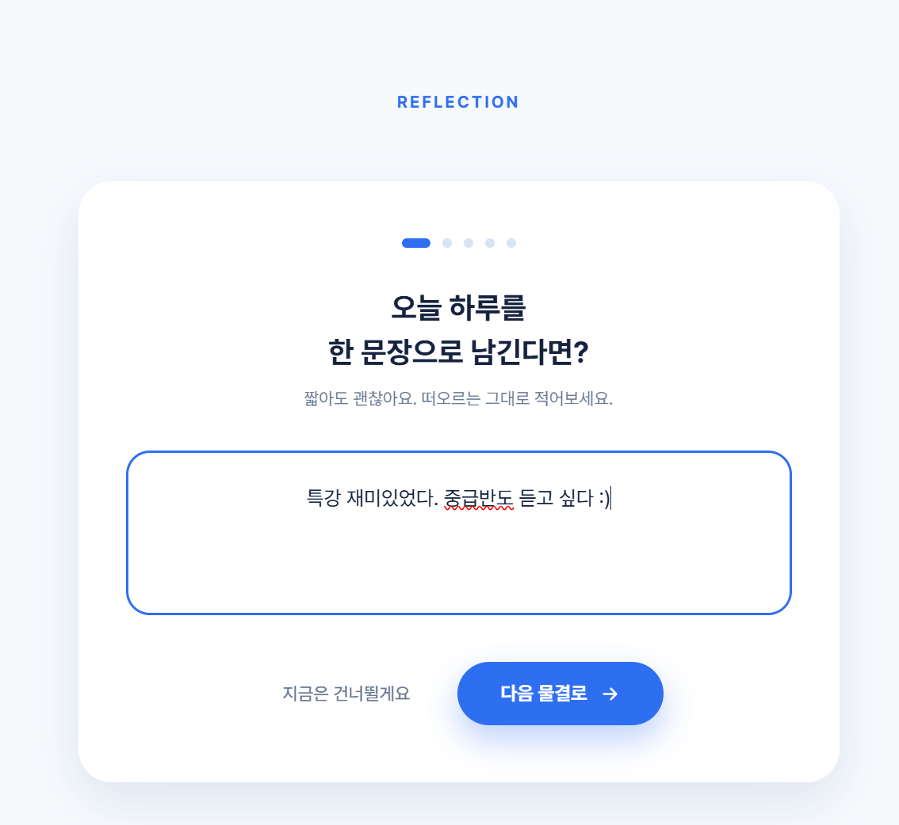
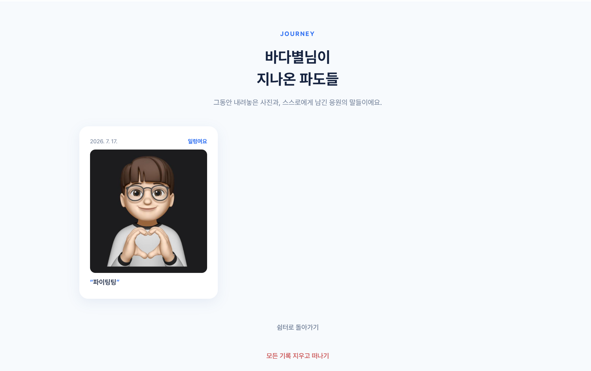
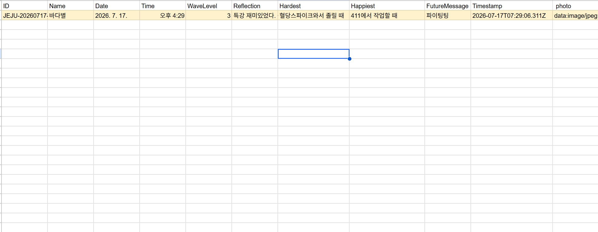
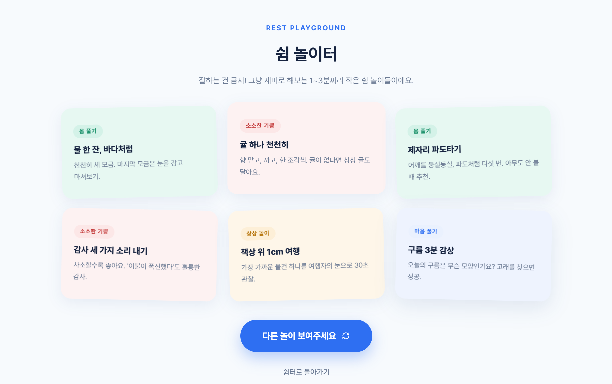

HTML · UI/UX Intensive — Final Project
JE:JU
당신이면, 충분합니다.
Prologue
하나의 섬을,
두 개의 마음이 살아갑니다
여행자의 제주
해마다 약 1,385만 명이
제주를 찾습니다*
도민의 제주
약 70만 명에게 제주는
여행지가 아닌 일상입니다
그런데 이 두 마음 모두, 정작 자신을 돌보는 법은 잊고 있습니다.
* 2025년 제주 방문 관광객 1,384만 명(잠정) — 제주도·제주관광협회 집계, 4년 연속 1,300만 명 돌파
Problem 01 — 여행자
여행자에게 제주는,
소비하고 떠나는 곳입니다
놀고, 먹고, 찍고, 돌아갑니다.
그런데 마음은 — 떠나기 전과 똑같습니다.
'치유의 섬'에 다녀왔는데, 치유는 남지 않았습니다.
Problem 02 — 도민
치유의 섬에 사는 사람들은,
정작 가장 아픕니다
자살률 전국 1위
제주 (인구 10만 명당)36.3명
전국 평균29.1명
2024년, 통계 작성 이래 처음으로 전국 17개 시·도 중 1위.
자살 사망자 243명 — 1983년 이후 역대 최다, 4년 연속 상승.
출처: 국가데이터처(옛 통계청) 「2024년 사망원인통계」 · 한라일보 기획 '제주, 생명존중도시로 나아간다'(2026.7.15) · JIBS 제주방송(2025.11.6). 연령표준화 자살률 기준 제주 32.4명 vs 전국 24.6명.
One Question
치유의 섬, 제주.
그런데 정작, 아무도 치유받지 못하고 있습니다
그래서 우리는 물었습니다.
제주가 진짜 치유해야 할 것은 무엇인가 —
답은 사람이었습니다. 여행자도, 도민도.
잠시, 함께 숨을 골라볼까요
Brand Story
JE:JU
JE
Just Enough
지금의 나로, 충분한
JU
Just You
다른 누구도 아닌, 나
우리는 제주를 다시 읽었습니다.
관광지가 아니라, 자신에게 돌아오는 섬으로.
여행자에게
노는 섬에서,
마음이 회복되는 섬으로
도민에게
너무 익숙한 섬에서,
나를 되돌아보는 섬으로
Solution
디지털 감정 쉼터, JE:JU
일기가 아닙니다. 메모가 아닙니다.
여행자에게도, 도민에게도 — 나에게 돌아오는 자리입니다.
쉼터
오늘 마음의 파도를 고르고,
하루를 한 문장으로 기록
여정
사진과 응원의 한마디가
쌓이는 나의 아카이브
쉼 놀이터
잘하는 건 금지 —
1~3분짜리 가벼운 쉼 놀이
지금부터, 세 개의 방을 차례로 보여드리겠습니다.
Service Tour — 첫 화면
"오늘도 고생 많았어요"

스크린샷: img/1.png
- 1단 하나의 버튼, '쉬어가기'화면의 목적이 하나뿐인 직관적 구조 — 설명서 없이도 쓸 수 있는 UI
- 2상단 내비 — 쉼터 · 여정 · 쉼 놀이터서비스 전체가 세 개의 방으로 이루어진 단순한 구조
- 3파도의 브랜드 언어감정을 '마음의 파도'로 은유 — 화면 전체가 잔잔한 바다입니다
Service Tour — 온보딩
이름 대신 별명, 기록 대신 안심

스크린샷: img/2.png

스크린샷: img/8.png
- 1본명이 아니어도 괜찮아요불리고 싶은 별명으로 시작하는 낮은 문턱
- 2비밀번호는 해시(hash)로만 저장오른쪽 시트 화면처럼 — 운영자도, Google Sheets에서도 원문을 볼 수 없습니다
- 3약관 동의 · 만 14세 이상감정 데이터를 다루는 서비스답게, 시작부터 안전하게
Service Tour — 쉼터
오늘의 마음을, 파도로 기록합니다

스크린샷: img/3.png

스크린샷: img/4.png
- 1좋고 나쁜 감정은 없습니다'아주 잔잔해요'부터 '거칠어요'까지 — 파도는 그저 높았다, 낮아질 뿐
- 2한 문장이면 충분한 기록짧아도 괜찮고, "지금은 건너뛸게요"도 존중하는 UX
- 3다섯 번의 짧은 물결단계형 질문 카드로 부담 없이 이어지는 흐름
Service Tour — 여정
지나온 파도는, 여정이 됩니다

스크린샷: img/6.png
- 1사진 한 장 + 응원 한마디내가 남긴 기록이 실시간으로 동기화되어 카드로 쌓입니다
- 2다시 돌아와 꺼내 보는 기록비밀번호로 이어지는 나만의 아카이브
- 3'모든 기록 지우고 떠나기'데이터의 주인은 나 — 떠남까지 설계된 서비스
Service Tour — 데이터
모든 기록은 Google Sheets로

스크린샷: img/7.png
HTML Form
Google Stitch 기반 UI/UX
Apps Script
Google Apps Script 연동
Google Sheets
감정 데이터 아카이브
감정·문장·사진·미래 메시지까지 시트 한 줄로 — 서버 없이 실시간 저장.
이 프레젠테이션 역시 강의의 디자인 시스템(5색 · Pretendard · 8px 여백 · 그라데이션 없음 · 전환 0.3초 이하)으로 제작되었습니다.
Service Tour — 쉼 놀이터
마지막 방, 쉼 놀이터
잘하는 건 금지 — 1~3분짜리 가벼운 쉼 놀이들.

스크린샷: img/9.png
(이미지가 없어도 클릭하면 놀이 카드가 나타납니다)
화면을 클릭하면, 쉼 놀이터로 빨려 들어갑니다
카드를 클릭하면 — 실제 서비스처럼 다른 놀이로 바뀝니다.
JE:JU
Just Enough. Just You.
이 섬을 스쳐 가는 당신도,
이 섬을 살아가는 당신도 —
지금 그대로, 충분합니다.
감사합니다.